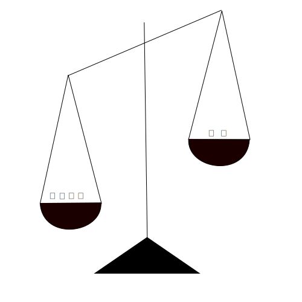
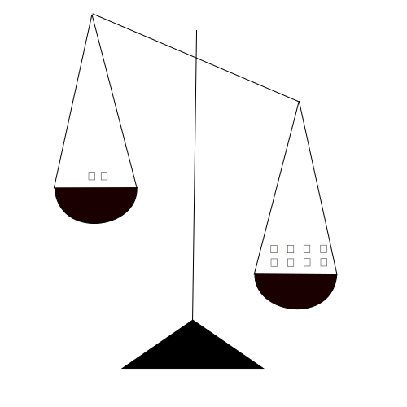
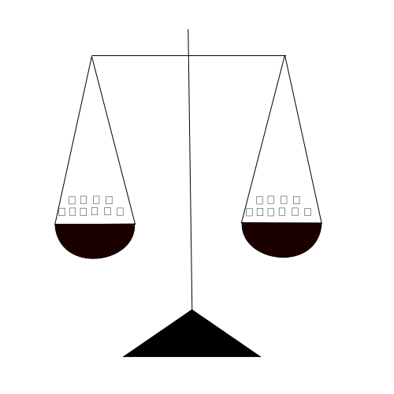

Uriah Finkel
What is the Average Treatment Effect of Smoking 🚬 (vs not smoking 🚭) for Lung Cancer 🦀?
Need for confounder adjustment:
Parent that smokes 😤 (unlike non-smoker parent 😐) increases the probability of a child that smokes 🚬.
Parent that smokes 😤 increases the probability of a lung cancer for a child through passive smoking.
By God-Given knowledge we have access to the true counterfactual outcomes for each individual for smoking 🚬 and for not smoking 🚭
We can also calculate the Causal Individual Treatment Effect and the true Causal Average Treatment Effect:
\(\text{Causal ATE} = \frac{11}{16} - \frac{7}{16} = \frac{4}{16} = 0.25\)
By God-Given knowledge we have access to the true counterfactual outcomes for each individual for smoking 🚬 and for not smoking 🚭
We can also calculate the Causal Individual Treatment Effect and the true Causal Average Treatment Effect:
\(\text{Causal ATE} = \frac{11}{16} - \frac{7}{16} = \frac{4}{16} = 0.25\)
By God-Given knowledge we have access to the true counterfactual outcomes for each individual for smoking 🚬 and for not smoking 🚭
We can also calculate the Causal Individual Treatment Effect and the true Causal Average Treatment Effect:
\(\text{Causal ATE} = \frac{11}{16} - \frac{7}{16} = \frac{4}{16} = 0.25\)
The observed outcome is the suitable counterfactual outcome to the given treatment.
In real life we can analyse only the observed outcomes.
The naive Associational Average Treatment Effect will be:
\(\text{Associational ATE} = \frac{7}{10} - \frac{2}{6} \approx 0.366\)
Which is obviously biased.
IPW is a method for manipulating the sample while creating pseudo-population. Therefore, we don’t need the outcome for the first step.
But we do need to estimate the probability of having a treatment for each individual given the confounders.
\(p(A|X)\)
On the non-parametric case it’s just the proportions of the treated patients from the subpopulation \(X=x\)
IPW is a method for manipulating the sample while creating pseudo-population. Therefore, we don’t need the outcome for the first step.
But we do need to estimate the probability of having a treatment for each individual given the confounders.
\(p(A = 0|X = 0) = \frac{4}{6}\)
IPW is a method for manipulating the sample while creating pseudo-population. Therefore, we don’t need the outcome for the first step.
But we do need to estimate the probability of having a treatment for each individual given the confounders.
\(p(A = 0|X = 0) = \frac{4}{6}\)
\(p(A = 1|X = 0) = \frac{2}{6}\)
IPW is a method for manipulating the sample while creating pseudo-population. Therefore, we don’t need the outcome for the first step.
But we do need to estimate the probability of having a treatment for each individual given the confounders.
\(p(A = 0|X = 0) = \frac{4}{6}\)
\(p(A = 1|X = 0) = \frac{2}{6}\)
\(p(A = 0|X = 1) = \frac{2}{10}\)
IPW is a method for manipulating the sample while creating pseudo-population. Therefore, we don’t need the outcome for the first step.
But we do need to estimate the probability of having a treatment for each individual given the confounders.
\(p(A = 0|X = 0) = \frac{4}{6}\)
\(p(A = 1|X = 0) = \frac{2}{6}\)
\(p(A = 0|X = 1) = \frac{2}{10}\)
\(p(A = 1|X = 1) = \frac{8}{10}\)



\(\hat{ATE} = \frac{10.5}{16} - \frac{6.5}{16} = 0.25\)
\(Pr[Y^{a=1}] = \sum_{X=x}Pr[Y^{a=1}|X =x]*Pr(X=x)\)
\(\hat{Pr[Y^{a=1}]} = \sum_{X=x}Pr[Y=1|X =x, A=1]*Pr(X=x)\)
Therefore we can estimate directly the estimate for the average treatment effect if we will use estimates for every stratum of the confounders (X) and the Treatment (A).
The same goes for:
\(\hat{Pr[Y^{a=0}]} = \sum_{X=x}Pr[Y=1|X =x, A=0]*Pr(X=x)\)
\(\hat{Pr[Y^{a=1}]} = \frac{1}{2}*\frac{6}{16} + \frac{6}{8}*\frac{10}{16} = 0.625\)
\(\hat{Pr[Y^{a=0}]} = \frac{1}{4}*\frac{6}{16} + \frac{1}{2}*\frac{10}{16} = 0.425\)
\(\hat{ATE} = \frac{10.5}{16} - \frac{6.5}{16} = 0.25\)
Parametric versions of IPW and Standardization will yield different estimates unlike the Non-Parametric Versions.
For IPW: We can use ML for propensity! 🤖
For Standardization: We can use ML 🤖 (T/S/X Learners) or old-school outcome regressions 👴 (just don’t use colliders).
IPW: Model for the treatment without overfitting the for the outcome.
Standardization: CATE / ITE.
Doubly Robust: Estimates are consistent even if we are wrong about treatment model or outcome model.